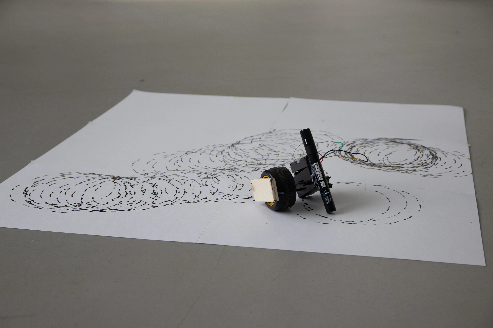
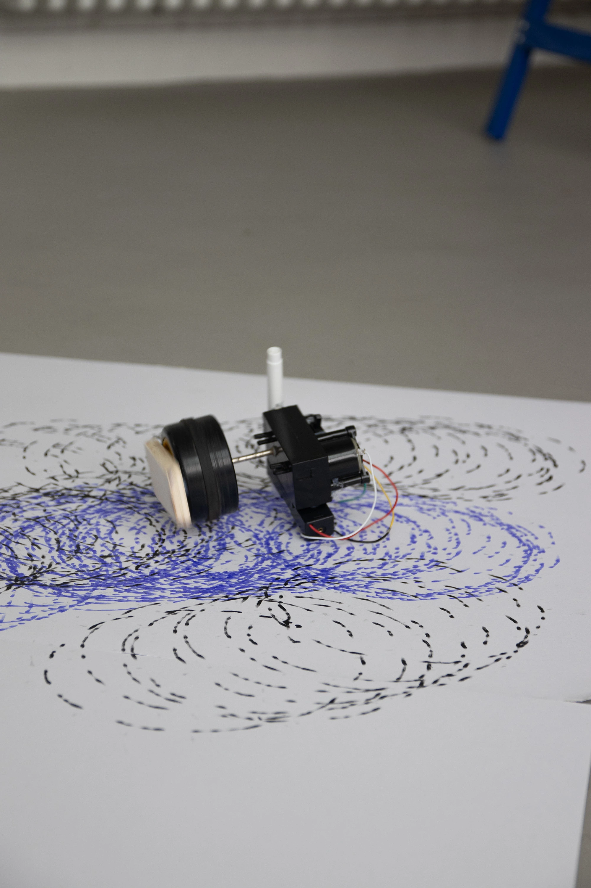
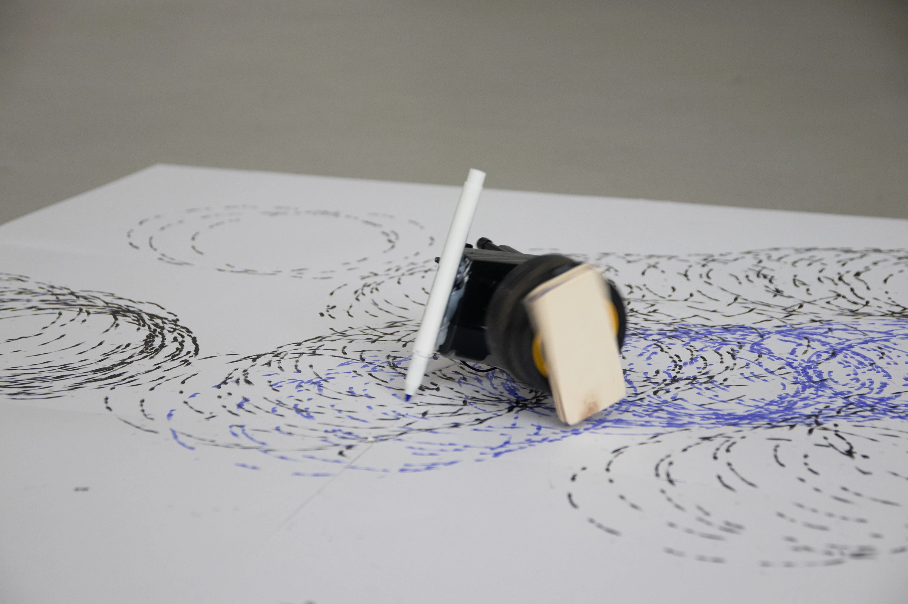
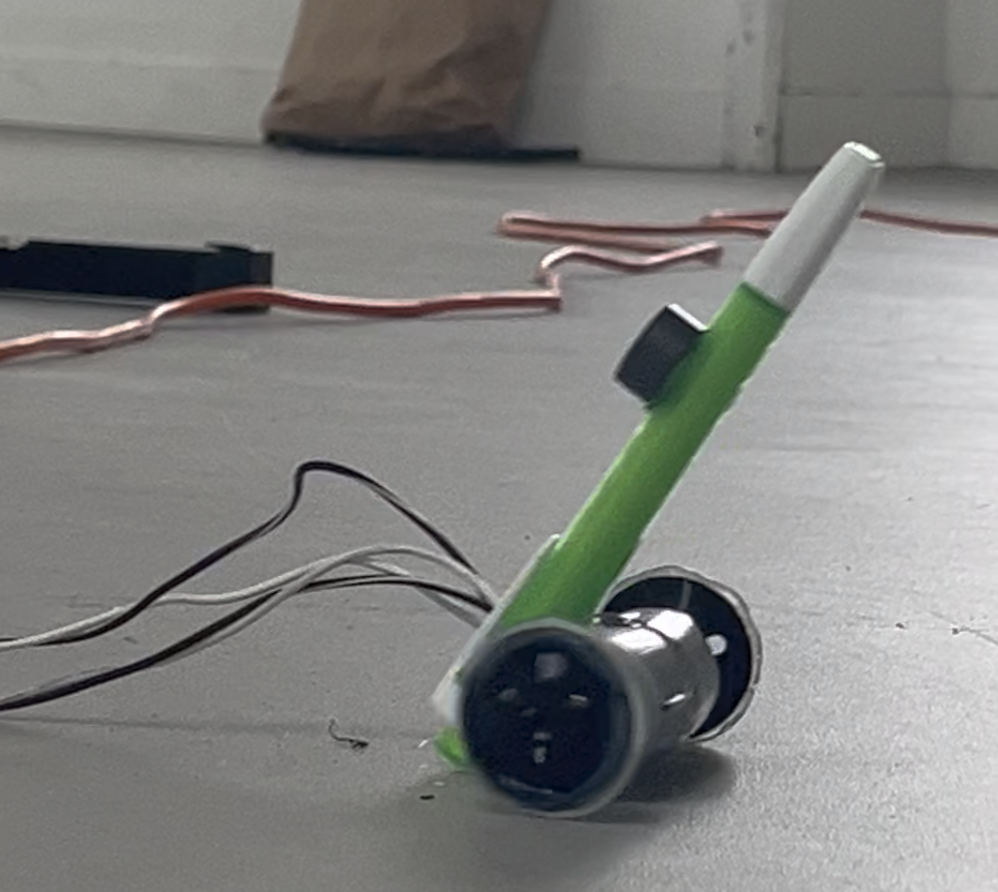
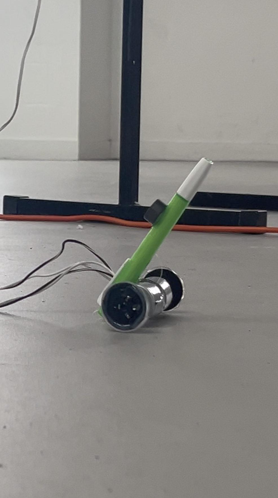
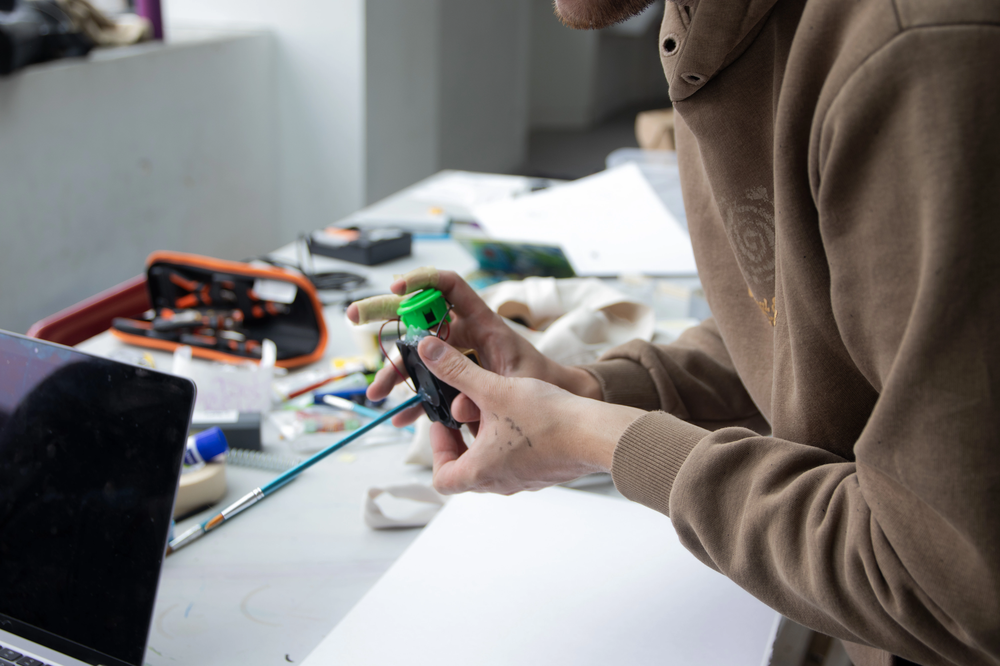
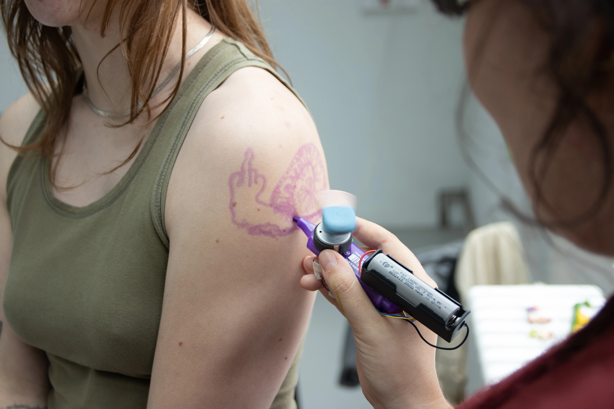
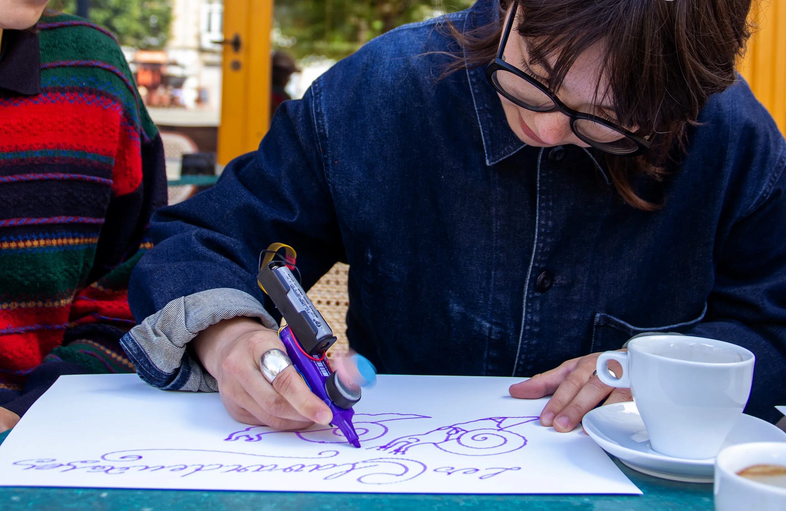
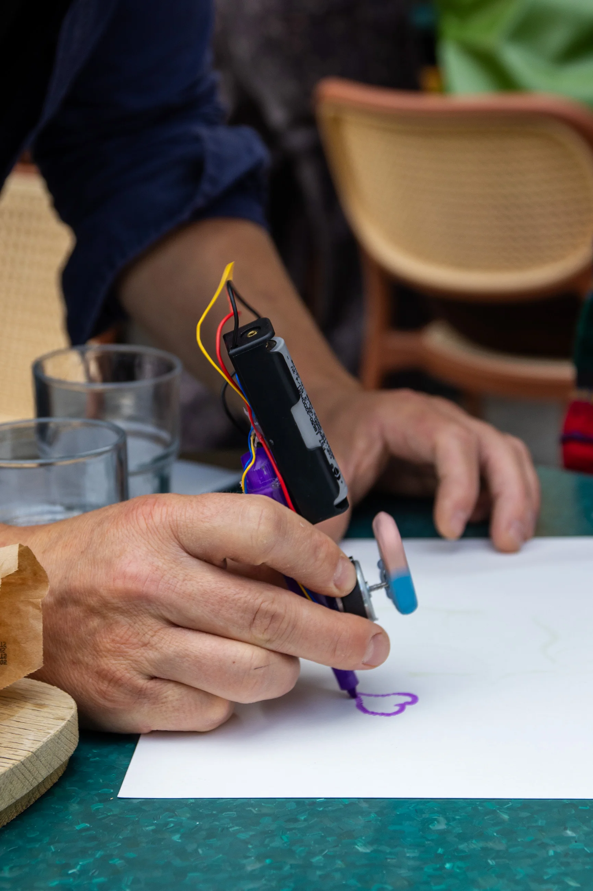
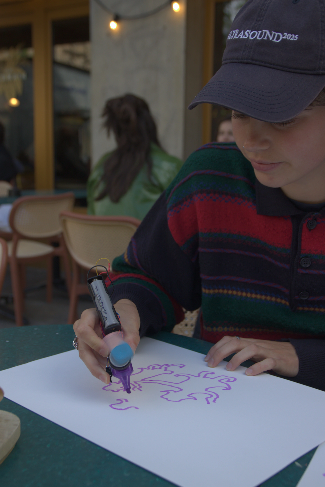

Tooopie
350° fragmenté
Refonctionnalisé à l'Hôtel Pasteur — Rennes en mai 2026.
Toupie graphique et autonome, jusqu'où ira-t-elle ?
Vitesse: 2 tours par seconde.
Composants: roue d'une voiture télécommandée d'un jouet d'enfance de Yann, pile récupérée, interrupteur récupérée d'un objet collecté à la déchetterie.
Diiing
Traces brinquebalant
Refonctionnalisé à l'Hôtel Pasteur — Rennes en mai 2026.
Robot télécommandé qui roule de gauche à droite avec vos doigts.
Caracteristique: têtu, ne fonctionne qu'une fois sur deux.
Composants: deux moteurs d'un lecteur CD récupérés en déchetterie, chute de bois, boutons dessoudés d'un ancien contrôleur, ls trouvés, récupérée d'emprunté à un objet collecté à la déchetterie.



VVR — Splash !
Encré le vent
Refonctionnalisé à l'Hôtel Pasteur — Rennes en mai 2026.
Prenez en main le pinceau, et laissez-vous guider par l'air.
Composants: ventilateur, interrupteur recyclé, pile trouvée, pinceau.
Bzzz
Attention aux coups de gomme !
Refonctionnalisé à l'Hôtel Pasteur — Rennes en mai 2026.
Un stylo augmenté d'une pile rechargeable, un interrupteur et une gomme montée sur un moteur de récup' pour le contrepoids.
Noah a l'Hotel Pasteur — Rennes :
« C'est entre le tatouage et la cuisine. »
Composants: stabilo de la trousse de Lucie, interrupteur à gâchette d'une imprimante, batterie rechargeable recyclée d'un ancien aspirateur, moteurs de vibration trouvés dans une manette de playstation, gomme de Yann.






VVR — Gling !
Ventilos musicaux
Refonctionnalisé à l'école Estienne en mai 2026.
Tendez l'oreille, approchez-vous, écoutez le vent.
Composants: ventilateurs de seconde main achetés à un ancien élève de la section, fils de fer et trombones.